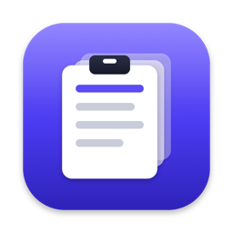
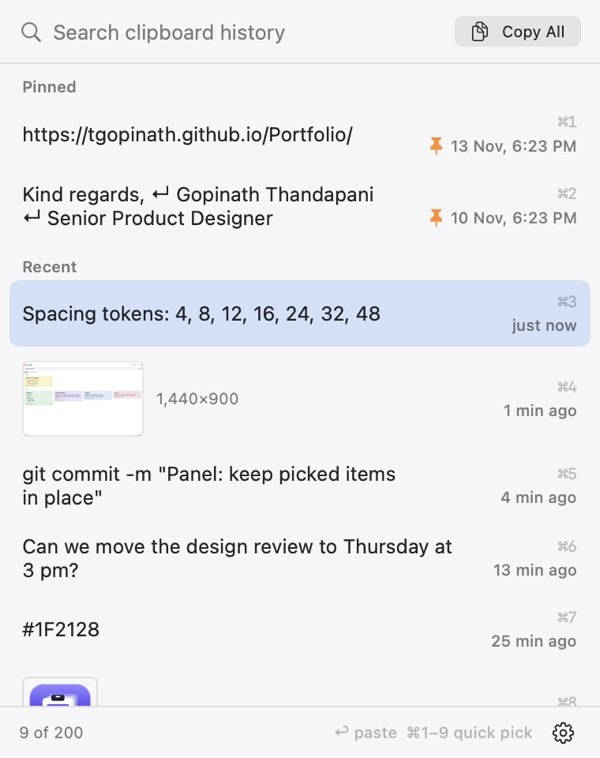
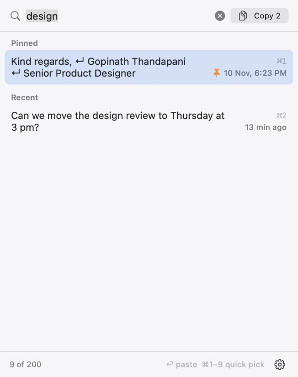
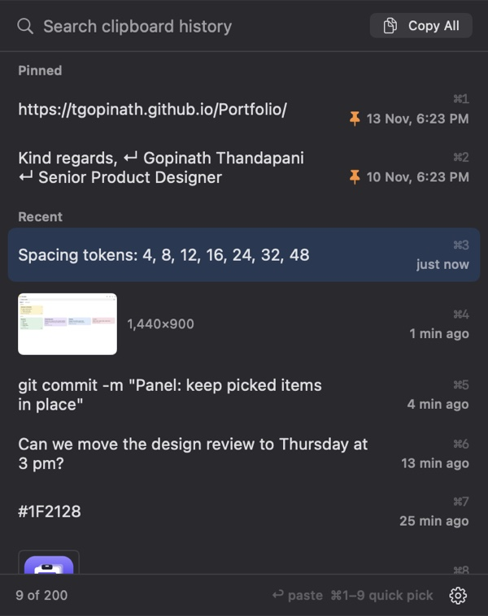

Clipboard History
A clipboard manager that lives in the menu bar on a Mac and the system tray on Windows. It starts when you sign in and quietly saves every copy, text and images, without ever being opened. When you need something you copied earlier, press ⌃⌘V on a Mac or Ctrl+Alt+H on Windows from any app, type a few letters and press Return.
Mac: open the DMG and drag Clipboard History to Applications. The first time, right-click the app and choose Open, because it isn't notarised.
Windows: run the installer (per user, no admin needed). It isn't code-signed, so if SmartScreen says “Windows protected your PC”, choose More info, then Run anyway. The tray icon may be under the ^ overflow arrow.
- Menu bar only on a Mac, with no Dock icon; the icon pulses briefly each time a copy is saved. System tray on Windows.
- Keeps 200 items by default (50 to 1000), saved across restarts.
- Opens with ⌃⌘V on a Mac or Ctrl+Alt+H on Windows. Search as you type, ↑ ↓ and ↩ to pick, ⌘1–9 (Ctrl+1–9 on Windows) for the first nine.
- Copy one item, or ⇧⌘C (Ctrl+Shift+C) Copy All: every item, or only the search matches, joined line by line.
- Pin items to their own Pinned section, delete, pause recording, clear history.
- Strictly newest first. Picking an old item keeps its original time instead of jumping to the top.
- Skips secrets that password managers mark as concealed.
- Optional paste after picking (needs Accessibility permission).
On the desktop
The panel opens under the menu bar icon and closes when you click anywhere else.

The panel
The Mac app, rendered from its own SwiftUI views with sample data, in light and dark mode. The Windows tray app has the same features. Scroll sideways for more.




Built with Swift, SwiftUI and AppKit in a single file on macOS, and C# WinForms on .NET 8 on Windows (installer built by GitHub Actions). History is stored locally on your computer. Source on GitHub ↗.